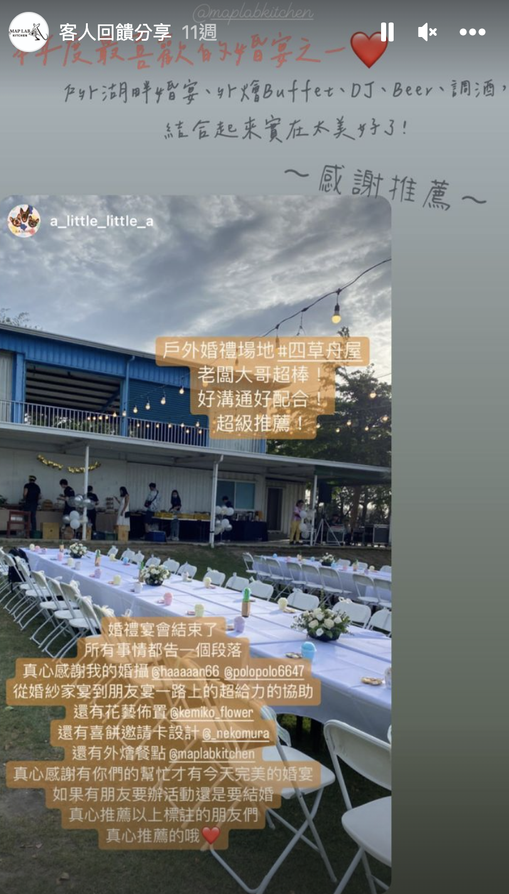
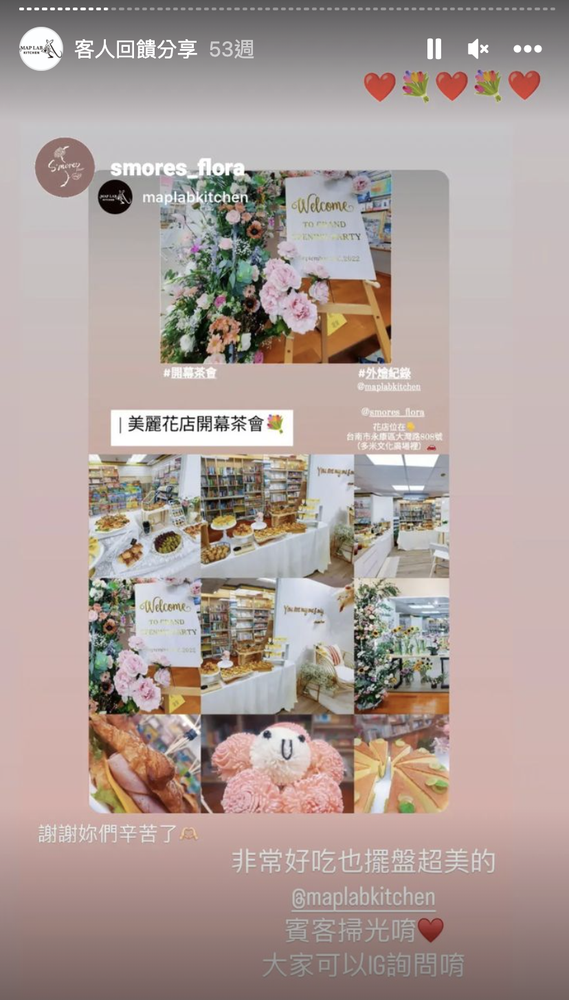
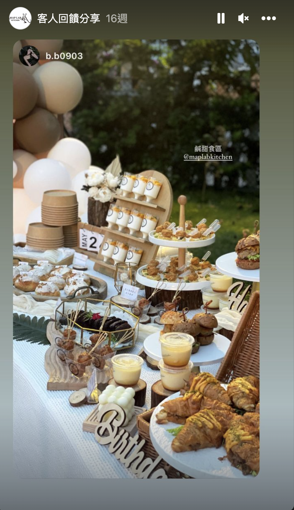
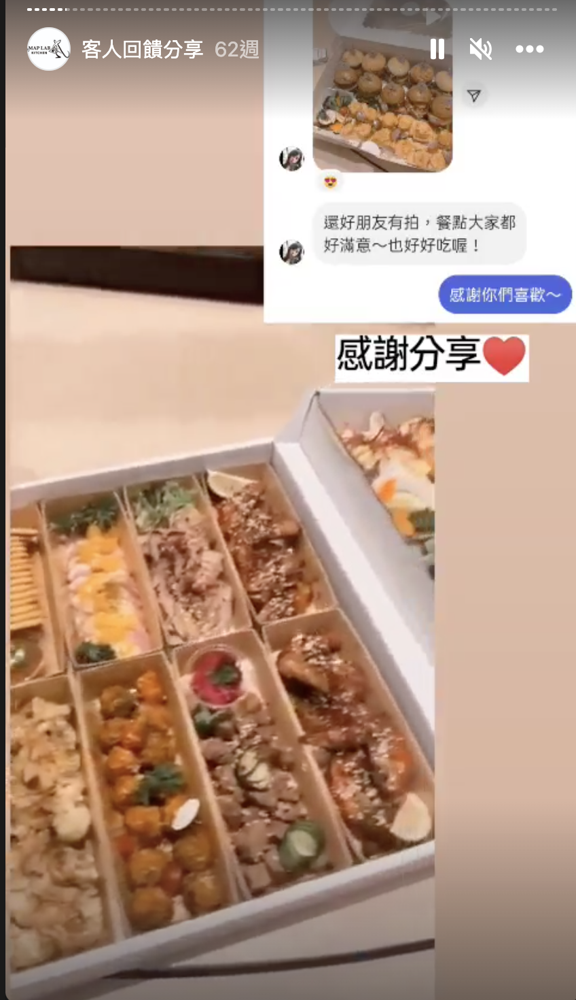

每個場景都是我們辦過的現場，菜單跟著場合客製。
大新美術館開幕，從剪綵到迎賓茶點的動線由我們統籌。菜單跟著儀式走：迎賓一口點心，剪綵後開檯。
大臺南會展中心的企業接待，茶點跟著議程分批上檯，中場不斷線。菜單依人數與時段客製。
汽車展間的公益發表會，長桌餐檯配著品牌視覺一起設計。菜單跟著品牌調性與來賓名單走。
週歲、生日到婚禮迎賓，甜點桌就是全場的合照背景。菜單跟著主題色和年齡層客製。




從老屋庭院到會議中心，在地團隊替你把場地條件想在前面。
科技、醫療、車廠到公部門的正式場合。
日期、人數、場合與場地，一句話就能開始。
菜單跟著場合客製，看得到吃什麼、多少錢。
付訂保留檔期，活動當天我們提前到場設置佈置。
點任一 LINE 按鈕，告訴我們日期、人數與場地。詳見詢問指南。
依人數、菜單與場地條件報價，預算概念見費用說明。
可以，菜單本來就跟著場合設計，靈感見菜單設計 20 例。